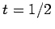
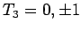
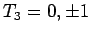

Inhalt Index DeskTop Bronstein

 Algebra und Diskrete Mathematik Klassische algebraische Strukturen Anwendungen von Gruppen Anwendungen in der Teilchenphysik
Algebra und Diskrete Mathematik Klassische algebraische Strukturen Anwendungen von Gruppen Anwendungen in der Teilchenphysik


Das Nukleon hat den Isospin . Es existiert in zwei Ladungszuständen, dem Isospindublett mit t3 =+1/2 (Proton) und t3 =-1/2 (Neutron). Die Isospinfunktionen des Nukleons transformieren sich ebenfalls nach der irreduziblen Darstellung D(1/2) von  . Gemäß (5.194) kann ein Zweinukleonensystem in Isospinmultipletts mit T=1 (Triplett mit ) und T=0 (Singulett mit T3 =0) auftreten.
. Gemäß (5.194) kann ein Zweinukleonensystem in Isospinmultipletts mit T=1 (Triplett mit ) und T=0 (Singulett mit T3 =0) auftreten.